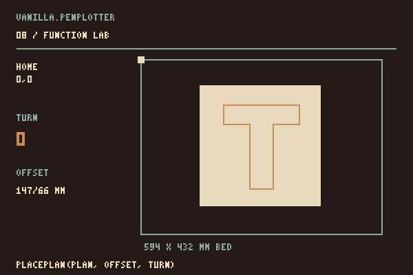

Guide
1. Draw a line
Use the page from Setup. Its drawing starts with:
plot.line(12, 12, 92, 12);The two points are measured from the drawing's corner, in millimetres. Add another shape before drawRoute():
plot.circle(60, 40, 15);The circle has a radius of 15 mm. Reload to see the line and circle. The engine records shapes; drawRoute() shows their planned route on the canvas.

circle() takes a radius.2. Paper and placement
The drawing uses millimetres already. Choosing paper does not resize its strokes.
Set the paper format
Add paperSize to the import and replace the engine declaration:
import { PlotterEngine, paperSize } from "https://cdn.jsdelivr.net/gh/seb-prjcts-be/vanilla.penplotter@4880b41b911ede36b391e2924a4949b27bdb2378/vanilla.penplotter.js";
const plot = new PlotterEngine({
units: "mm",
page: { ...paperSize("A2", "landscape"), margin: 12 }
});Use the format and orientation of your paper. The line stays 80 mm long, near the paper corner.
Place it on the machine
In an example's pen panel, X and Y locate the paper corner from the machine origin. Set both to zero when those corners coincide. Use the paper already on your machine.

In my setup, X runs up the long rails and Y across to the right. The bed preview shows X to the right and Y down. The machine origin is the same point in both views.
The panel's Turn on the bed rotates the paper and drawing together. Check the preview against the actual sheet. Changing the format keeps stroke lengths; turning or changing X/Y changes where they land. Export links keep the original drawing coordinates.
Place a plan in your own code
Add Planner and Renderer to the import. After drawing, replace drawRoute() with:
const position = { x: 0, y: 0 };
const placed = Planner.placePlan(plot.plan(), position, 0);
Renderer.drawBed(canvas.getContext("2d"), placed, {
bed: { width: 594, height: 432 },
sheet: { ...position, width: 594, height: 420 }
});Enter your paper position in position. The last argument to placePlan() is the turn: 0, 90, 180 or 270 degrees. Use the placed plan for the bed preview and driver; the source drawing stays unchanged.

placePlan() changes the machine moves; the source drawing stays unchanged.3. Plot the drawing
The Setup steps show how to place paper, connect and plot with an example panel. Each example supplies that panel. Its drawing code makes the shapes; the panel handles the machine.
For your own application, open a Web Serial connection from a button click and pass a checked plan to driver.run(). The frame and wave source shows how the shared panel is attached.

4. Two ways to work
Draw everything, then plot

driver.run(). Use strategy: "drawn" to keep their drawing order.Draw one object, plot it, then the next

driver.session(). Make one object, await session.run(), then make the next. The pen returns home after the last object.An engine keeps its drawing after a plot. Running its plan again draws the same strokes again. Start a new engine for each new object to keep earlier strokes out of that object's plan. Ink remains on the paper.
Three lines, one at a time
Add this to the Setup module. It uses a log connection, so the machine stays still:
import { EbbDriver, createLogTransport } from "https://cdn.jsdelivr.net/gh/seb-prjcts-be/vanilla.penplotter@4880b41b911ede36b391e2924a4949b27bdb2378/src/driver/ebb.js";
const driver = new EbbDriver({
transport: createLogTransport(), profile: "idraw-hse-a2"
});
const result = await driver.session(async function (session) {
for (let index = 0; index < 3; index += 1) {
const object = new PlotterEngine({
units: "mm", page: { width: 594, height: 420 }
});
object.line(12, 12 + index * 5, 17, 12 + index * 5);
await session.run(object.plan({ strategy: "drawn" }));
}
}, { confirmed: true });
console.log(result);The result should be { status: "complete", jobs: 3 }. Each line is calculated only after the previous one finishes. A session uses one pen and waits between objects; it does not accept new strokes during a moving job.
The session has been tested with simulated connections and three successive lines on the iDraw HSE / A2. Try the three-line example on screen or with the plotter.
Pens and layers
plot.tool({ id: "blue", name: "Blue fineliner", color: "#234f84", width: 0.3 });
plot.layer("waves", { toolId: "blue" });
plot.polyline([{ x: 20, y: 40 }, { x: 105, y: 80 }, { x: 190, y: 40 }]);
plot.tool({ id: "red", name: "Red fineliner", color: "#d94b39", width: 0.3 });
plot.layer("accents", { toolId: "red" });
plot.circle(105, 145, 24);
visible property to false to leave it out of the plan; its paths remain in the document.Fills

const boundary = [
{ x: 30, y: 40 },
{ x: 180, y: 40 },
{ x: 165, y: 230 },
{ x: 45, y: 245 }
];
plot.hatch(boundary, {
spacing: 2.4,
angle: Math.PI / 4
});
plot.stipple(boundary, {
count: 240,
minDistance: 1.5,
seed: 42
});
Cleanup and route planning
plot.optimize({
duplicateTolerance: 0.01,
mergeTolerance: 0.05,
simplifyTolerance: 0.03
});
const plan = plot.plan({
strategy: "nearest",
drawSpeed: 40, // mm/s; chosen operating settings, not vendor defaults
travelSpeed: 40,
acceleration: 800, // mm/s², the estimate ramps like the machine
travelAcceleration: 300,
liftDelay: 0.6, // s per stroke: pen down, and up again
toolChangeDelay: 15
});
console.log(plan.stats);Tolerances, coordinates and distance statistics use document units. Planner speeds use mm/s; G-code feed rates use mm/min. HPGL and G-code exports convert coordinates to physical units (96 CSS pixels = 1 inch). SVG retains the document units.
After editing the document, export, statistics and preview rebuild stale plans automatically, retaining the previous optimization and planning settings. This also covers edits to returned paths, layers and tools. Document data must remain JSON-serializable.


Files

Export the current drawing as a string:
const svg = plot.exportSVG();
const hpgl = plot.exportHPGL({ unitsPerMm: 40 });
const gcode = plot.exportGCode({ penUp: "M5", penDown: "M3 S1000" });SVG is useful for inspecting or sharing the drawing. HPGL and G-code need commands and settings suited to the receiving machine. The SVG example imports supported paths and basic shapes.
Pen-lift calibration
The EBB driver keeps the controller's existing calibration unless you provide penLift. Its standard-servo settings and machine profiles are described in Architecture.
Use the modules directly
Import from src/geometry, src/optimizer, src/planner or src/renderer. Each stage accepts and returns the documented data objects. You can use these modules separately from PlotterEngine.
Core reference
| Call | Units and result |
|---|---|
new PlotterEngine({ units, page }) | Creates an engine and document. Use explicit units and page dimensions; the starter uses millimetres. |
line(), circle(), polyline() | Coordinates use document units. Circle takes a radius; polyline takes points. Geometry is added to the current layer. |
paperSize(format, orientation, units) | Returns A0–A6 dimensions; defaults to portrait and mm. Also exposed as PlotterEngine.paperSize(). Does not scale geometry. |
optimize(options), plan(options) | Cleanup uses document-unit tolerances. Plan returns one PlotPlan; nearest is greedy, drawn preserves path order and direction. Speeds are mm/s. |
drawRoute(context), drawBed(context, options) | DrawRoute previews planned routes. DrawBed previews machine moves with bed and sheet dimensions in millimetres. |
exportSVG/HPGL/GCode/JSON() | Return strings from the current plan. HPGL and G-code convert to physical units; machine commands require configuration. |
EbbDriver | Separate driver and transport. Physical tests cover the iDraw HSE/A2 only. Compile and log a dry run before a confirmed physical job. |
driver.session(prepare, options) | Runs one object at a time, retains position between objects and returns home after the last. One pen; await each session.run(plan). |